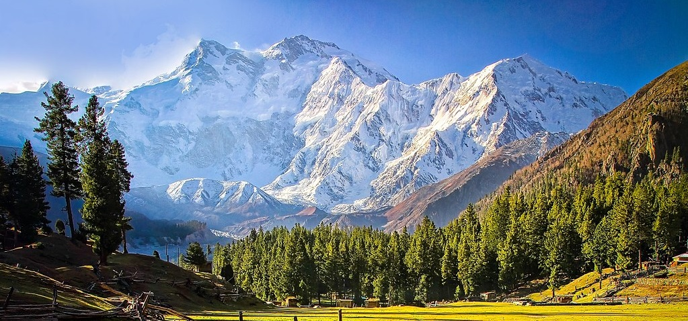

| Nanga Parbat |
|  |
One of the Tallest and Deadliest Mountains
-
Nanga Parbat's height is 8126 m, it is the 9th highest mountain on Earth.
-
It is situated just south of the Indus River in the Diamer District of Gilgit–Baltistan in Pakistani-administered Kashmir.
-
Nanga Parbat is notorious for being an extremely difficult climb, and has earned the nickname Killer Mountain for its high number of climber fatalities and pushing climbers to the test of their limits.
-
An immense, dramatic peak rising far above its surrounding terrain, it has the second highest prominence in the world only behind Mount Everest.
-
Nanga Parbat is the westernmost peak of the Himalayas.